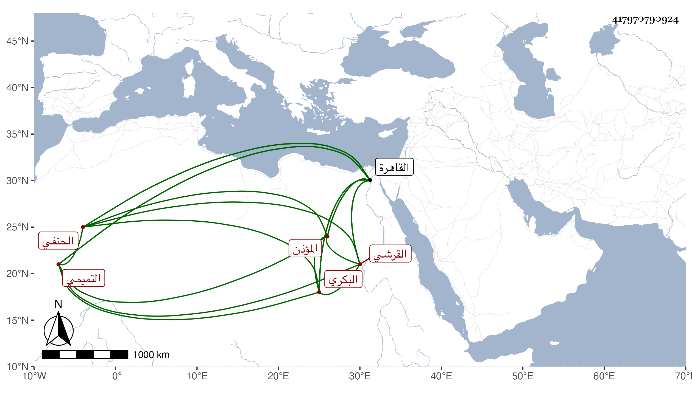

0902Sakhawi.DawLamic.ITO20230111-ara1.EIS1600.417970790924
Biography ID: 417970790924
96
أحمد بن علي بن محمد بن علي بن ضرغام بن علي بن عبد الكافي الشهاب أبو العباس القرشي التميمي البكري الغضايري الحنفي المؤذن أخو الشمس محمد يعرف بابن سكر بضم المهملة ثم كاف مشددة سمع بإفادة أخيه من البدر الفارقي وأبي زكريا يحيى بن المصري وأبي الفرج بن عبد الهادي والحسن بن السديد ويوسف بن عبد الله الدمشقي والشهاب أحمد بن أبي بكر بن علي الزبيري والموفق أحمد بن أحمد بن عثمان الشارعي والشمس محمد بن محمد بن عمر السراج وإبراهيم بن محمد بن عبد الغني بن تيمية في آخرين ، وأجاز له المزي والذهبي وابن الجزري وفاطمة ابنة العز وآخرون وحدث سمع منه الأئمة كشيخنا بالقاهرة والتقي الفاسي وذكره في تقييده والمقريزي في عقوده وأنه روى له المسلسل والعمدة ، وكان شيخا ساكنا مؤذنا بالمنصورية وجامع الحاكم وله بقربه دكان يبيع فيه الفخار . مات بالقاهرة في رجب سنة ست وله بضع وسبعون سنة .
